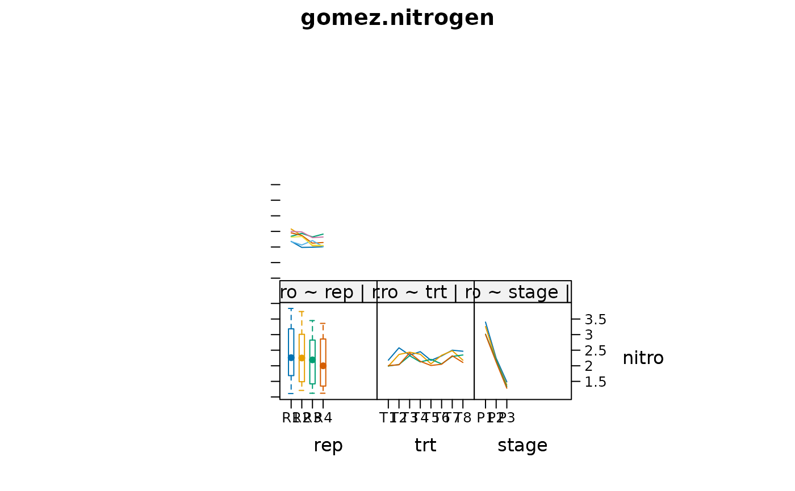

Soil nitrogen at three times for eight fertilizer treatments
gomez.nitrogen.RdSoil nitrogen at three times for eight fertilizer treatments
Format
A data frame with 96 observations on the following 4 variables.
trtnitrogen treatment factor
nitrosoil nitrogen content, percent
repreplicate
stagegrowth stage, three periods
Details
Eight fertilizer treatments were tested.
Soil nitrogen content was measured at three times. P1 = 15 days post transplanting. P2 = 40 days post transplanting. P3 = panicle initiation.
Used with permission of Kwanchai Gomez.
Source
Gomez, K.A. and Gomez, A.A.. 1984, Statistical Procedures for Agricultural Research. Wiley-Interscience. Page 259.
References
R-help mailing list, 9 May 2013. Data provided by Cyril Lundrigan. Analysis method by Rich Heiberger.
Examples
library(agridat)
data(gomez.nitrogen)
dat <- gomez.nitrogen
# Note the depletion of nitrogen over time (stage)
libs(HH)
#> Loading required package: grid
#> Loading required package: multcomp
#> Loading required package: mvtnorm
#> Loading required package: survival
#> Loading required package: TH.data
#> Loading required package: MASS
#>
#> Attaching package: ‘TH.data’
#> The following object is masked from ‘package:MASS’:
#>
#> geyser
#> Loading required package: gridExtra
#>
#> Attaching package: ‘HH’
#> The following object is masked from ‘package:base’:
#>
#> is.R
interaction2wt(nitro ~ rep/trt + trt*stage, data=dat,
x.between=0, y.between=0,
main="gomez.nitrogen")

# Just the fertilizer profiles
with(dat, interaction.plot(stage, trt, nitro,
col=1:4, lty=1:3, main="gomez.nitrogen",
xlab="Soil nitrogen at three times for each treatment"))
# Gomez table 6.16
m1 <- aov(nitro ~ Error(rep/trt) + trt*stage, data=dat)
summary(m1)
#>
#> Error: rep
#> Df Sum Sq Mean Sq F value Pr(>F)
#> Residuals 3 0.8457 0.2819
#>
#> Error: rep:trt
#> Df Sum Sq Mean Sq F value Pr(>F)
#> trt 7 1.2658 0.18083 4.935 0.00201 **
#> Residuals 21 0.7695 0.03664
#> ---
#> Signif. codes: 0 ‘***’ 0.001 ‘**’ 0.01 ‘*’ 0.05 ‘.’ 0.1 ‘ ’ 1
#>
#> Error: Within
#> Df Sum Sq Mean Sq F value Pr(>F)
#> stage 2 52.04 26.021 715.871 < 2e-16 ***
#> trt:stage 14 3.57 0.255 7.008 1.53e-07 ***
#> Residuals 48 1.74 0.036
#> ---
#> Signif. codes: 0 ‘***’ 0.001 ‘**’ 0.01 ‘*’ 0.05 ‘.’ 0.1 ‘ ’ 1
# Gomez table 6.18
# Treatment 1 2 3 4 5 6 7 8
cont <- cbind("T7 vs others" = c( 1, 1, 1, 1, 1, 1,-7, 1),
"T8 vs others" = c( 1, 1, 1, 1, 1, 1, 0,-6),
"T2,T5 vs others" = c(-1, 2,-1,-1, 2,-1, 0, 0),
"T2 vs T5" = c( 0, 1, 0, 0,-1, 0, 0, 0))
contrasts(dat$trt) <- cont
contrasts(dat$trt)
#> T7 vs others T8 vs others T2,T5 vs others T2 vs T5
#> T1 1 1 -1 0 -3.028130e-01
#> T2 1 1 2 1 8.326673e-17
#> T3 1 1 -1 0 -2.101031e-01
#> T4 1 1 -1 0 -3.487772e-01
#> T5 1 1 2 -1 2.775558e-17
#> T6 1 1 -1 0 8.616933e-01
#> T7 -7 0 0 0 -1.387779e-17
#> T8 1 -6 0 0 0.000000e+00
#>
#> T1 -6.632738e-01 -4.673031e-01
#> T2 8.326673e-17 0.000000e+00
#> T3 -1.136421e-01 8.324315e-01
#> T4 7.387109e-01 -2.875078e-01
#> T5 8.326673e-17 0.000000e+00
#> T6 3.820501e-02 -7.762061e-02
#> T7 5.551115e-17 2.775558e-17
#> T8 5.551115e-17 5.551115e-17
m2 <- aov(nitro ~ Error(rep/trt) + trt*stage, data=dat)
summary(m2, expand.split=FALSE,
split=list(trt=list(
"T7 vs others"=1,
"T8 vs others"=2,
"T2,T5 vs others"=3,
"T2 vs T5"=4,
rest=c(5,6,7)),
"trt:stage"=list(
"(T7 vs others):P"=c(1,8),
"(T8 vs others):P"=c(2,9),
"(T2,T5 vs others):P"=c(3,10),
"(T2 vs T5):P"=c(4,11),
"rest:P"=c(5,6,7,12,13,14))
))
#>
#> Error: rep
#> Df Sum Sq Mean Sq F value Pr(>F)
#> Residuals 3 0.8457 0.2819
#>
#> Error: rep:trt
#> Df Sum Sq Mean Sq F value Pr(>F)
#> trt 7 1.2658 0.1808 4.935 0.00201 **
#> trt: T7 vs others 1 0.3511 0.3511 9.581 0.00548 **
#> trt: T8 vs others 1 0.0455 0.0455 1.242 0.27761
#> trt: T2,T5 vs others 1 0.0228 0.0228 0.621 0.43952
#> trt: T2 vs T5 1 0.1176 0.1176 3.209 0.08764 .
#> trt: rest 3 0.7289 0.2430 6.630 0.00252 **
#> Residuals 21 0.7695 0.0366
#> ---
#> Signif. codes: 0 ‘***’ 0.001 ‘**’ 0.01 ‘*’ 0.05 ‘.’ 0.1 ‘ ’ 1
#>
#> Error: Within
#> Df Sum Sq Mean Sq F value Pr(>F)
#> stage 2 52.04 26.021 715.871 < 2e-16 ***
#> trt:stage 14 3.57 0.255 7.008 1.53e-07 ***
#> trt:stage: (T7 vs others):P 2 2.14 1.068 29.391 4.63e-09 ***
#> trt:stage: (T8 vs others):P 2 0.54 0.268 7.373 0.001613 **
#> trt:stage: (T2,T5 vs others):P 2 0.64 0.321 8.843 0.000538 ***
#> trt:stage: (T2 vs T5):P 2 0.02 0.011 0.298 0.743303
#> trt:stage: rest:P 6 0.23 0.038 1.051 0.404967
#> Residuals 48 1.74 0.036
#> ---
#> Signif. codes: 0 ‘***’ 0.001 ‘**’ 0.01 ‘*’ 0.05 ‘.’ 0.1 ‘ ’ 1